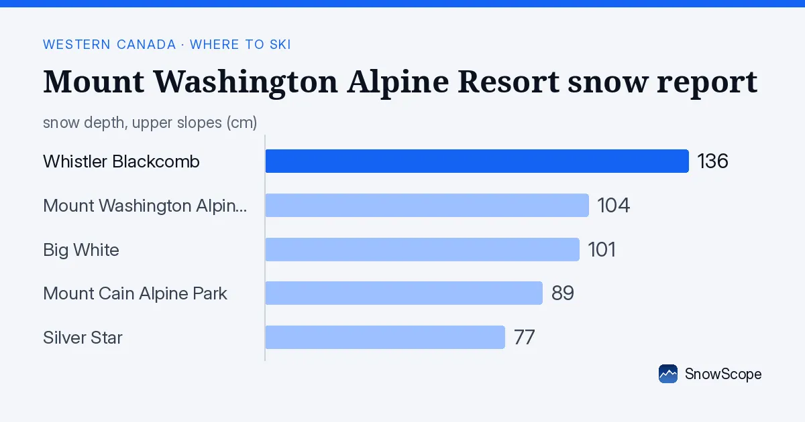
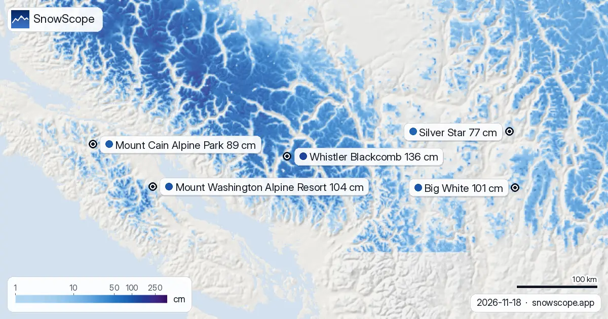
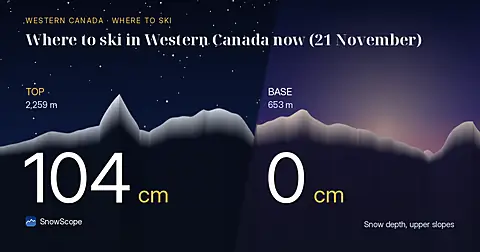

Mount Washington Alpine Resort snow report: 104 cm up top (Western Canada, 18 November)
Mount Washington Alpine Resort sits second in Western Canada with 104 cm of snow on its upper slopes as of 18 November. Whistler Blackcomb edges it out with 136 cm, while Big White holds third place at 101 cm—a tight race across three strong resorts.
See the live snow forecast for Mount Washington Alpine Resort in the SnowScope appSnow depth, powder alerts and the 3D map, free.
Upper slopes hold the season's first real snow
At Mount Washington Alpine Resort, upper slopes at 1,569 m show 104 cm today. The same measurement at mid-mountain (1,325 m) drops to just 6 cm, and the base (1,081 m) has only 2 cm. This spread tells you where winter is arriving in Western Canada: high ground collects and keeps snow; lower terrain stays bare.
The region's snowpack is building. SnowScope shows 322,740 km² under snow across Western Canada on 18 November, up from 278,460 km² two days earlier. The regional forecast for 21 November suggests a slight pull-back to 317,430 km², though 46 resorts across the region will still have cover on their upper runs.
| Resort | Snow depth | New snow, 72 h | Coming, next days | Top |
|---|---|---|---|---|
| Whistler Blackcomb | 136 cm | 8 cm | 0 cm | 2,259 m |
| Mount Washington Alpine Resort | 104 cm | 8 cm | 0 cm | 1,569 m |
| Big White | 101 cm | 4 cm | 0 cm | 2,271 m |
| Mount Cain Alpine Park | 89 cm | 8 cm | 0 cm | 1,616 m |
| Silver Star | 77 cm | 5 cm | 0 cm | 1,886 m |

Whistler Blackcomb sets the bar
Whistler Blackcomb's 136 cm on upper slopes (at 2,259 m) is the deepest in the region today. Its top-to-bottom picture is steeper than Mount Washington's: at mid-mountain the snow shrinks to 49 cm, and by the base at 653 m it vanishes. This extreme vertical change is common in dry coastal mountains—high north faces trap snow while low, sunny ground stays brown.
Mount Washington Alpine Resort's more compressed terrain (base at 1,081 m, top at 1,569 m) produces a gentler gradient. Its 104 cm upper slopes put it in contention, but the lower base elevation means less snow variation from top to bottom. Big White, with 101 cm on its upper plateau at 2,271 m, rounds out the top three.
What freezing levels mean for the next few days
On 18 November, the freezing level at Mount Washington Alpine Resort ranges between 710 m and 1,630 m. This means the base sits in a wet zone, while upper slopes stay frozen. By 19 November the freezing level climbs to 840 m to 1,730 m—the entire resort enters the thaw band. On 20 November it drops sharply to 630 m to 1,620 m, bringing wintry conditions back to the upper runs.
Wet snow on 19 November can become heavy and slow. If you plan to ski that day, aim for upper slopes where temperatures stay below freezing, or wait until 20 November when the colder air mass moves in and snow firms up.
Thin snow at this stage: know what lies beneath
One hundred and four centimetres sounds deep, but early-season snow is often thin and rests on grass, rock, or old soil. At Mount Washington Alpine Resort, the base still shows 2 cm—barely enough to cover any hazards. Stay on marked runs where the resort has prepared the ground.
The region received 8 cm in the three days leading to 18 November at Mount Washington Alpine Resort. The forecast shows no new snow in the next seven days. This means no fresh depth and no fresh powder; what you ski is what you have.
Big White's early advantage over past seasons
Big White enters mid-November with 101 cm on upper slopes at 1,891 m. At that height, the estimates 50 cm today—more snow than has fallen on this date in 33 of the past 46 winters. The usual depth for 18 November at that elevation is 38 cm, so this season is running ahead of normal.
Mount Washington Alpine Resort tells a different story at comparable heights. The estimates 31 cm at 1,456 m, the worst reading in the past 46 winters on 18 November. This resort is running far behind schedule. For early-season skiers, Big White and Whistler Blackcomb offer better depth cushions than Mount Washington Alpine Resort, though all three are still in the fragile early phase.
Planning your visit
If you are heading to Mount Washington Alpine Resort in the next week, focus on upper runs and avoid the base elevation until more snow arrives. The resort's official website will show which lifts and runs are open; this map shows what snow depth is there, not which terrain is active.
Check the official avalanche bulletin before touring or leaving marked slopes. Forecasts change daily, so look at the map again the morning of your drive. Early-season touring on thin snow carries different risks than deep-winter touring.
Tips for skiers
- Mount Washington Alpine Resort sits 30 cm behind Whistler Blackcomb today. If maximum snow depth matters for your trip, Whistler Blackcomb or Big White are safer bets this week.
- Upper slopes at Mount Washington Alpine Resort are where the snow is; the base is bare. Plan runs between 1,300 m and 1,569 m for the best chance of continuous snow.
- On 19 November, freezing levels climb above 1,730 m at Mount Washington Alpine Resort. If you must ski that day, ski early when the snow is still frozen, or wait for 20 November.
- Early-season snow often hides rocks and roots. Stay on groomed runs until more depth builds. Rocks just under thin snow can wreck a ski.
- Before you ski off-piste or go touring anywhere in Western Canada, read the official avalanche bulletin. Consult it again the day before you go.
About these numbers
Resort snow depths are the deepest snow on the resort's upper slopes on the date shown; they are estimates for an area, not a measurement at one point. Forecasts can change. Always read the official avalanche bulletin before going off-piste.
Official avalanche bulletins: Avalanche Canada
Cite this report
For research, teaching or the press: the numbers and charts are free to reuse under CC BY 4.0 with this citation.
SnowScope (2026), Mount Washington Alpine Resort snow report: 104 cm up top (Western Canada, 18 November), https://snowscope.app/blog/en/2026/11/western-canada-mount-washington-alpine-resort-snow-depth-today-18-november-2026.html, accessed 2026-11-18
SnowScope (Atlas Labs). (2026, November 18). Mount Washington Alpine Resort snow report: 104 cm up top (Western Canada, 18 November). SnowScope snow reports. https://snowscope.app/blog/en/2026/11/western-canada-mount-washington-alpine-resort-snow-depth-today-18-november-2026.html
BibTeX
@misc{snowscope2026westerncanadamountwashin,
author = {{SnowScope (Atlas Labs)}},
title = {Mount Washington Alpine Resort snow report: 104 cm up top (Western Canada, 18 November)},
year = {2026},
month = nov,
howpublished = {\url{https://snowscope.app/blog/en/2026/11/western-canada-mount-washington-alpine-resort-snow-depth-today-18-november-2026.html}},
note = {Published 2026-11-18 18:32 UTC; accessed 2026-11-18}
}· CC BY 4.0 · Methods, data and tools →
Mount Washington Alpine Resort: snow and temperature by height, this winter vs last (tools) →
Follow Mount Washington Alpine Resort
Free: a message when fresh snow is coming, and the forecast every morning.
More snow reports

150 cm on the upper slopes: that is why Whistler Blackcomb heads our list. Snow on the ground, snow from the last 72 hours, snow still to come: …

Is there more snow than a year ago? We compared today with 15 November last winter at 4 resorts in Western Canada: 2 of them have more snow now, …

Whistler Blackcomb forecast to gain 47 centimetres by Saturday as snow arrives Thursday through the region, according to our model run on 4 November.